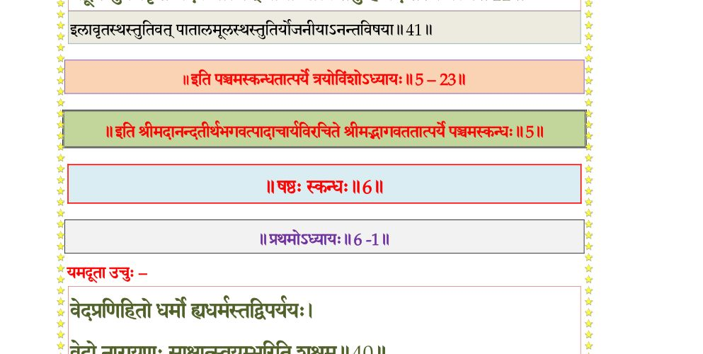

स्कन्ध 5 · अध्याय 23
श्लोक १
श्रीशुक उवाच–
अधस्तात्सवितुर्योजनायुते स्वर्भानुर्नक्षत्रवच्चरतीत्येके योऽसाव-मरत्वं ग्रहत्वं वाऽऽलभत भगवदनुकम्पया स्वयमसुरापसदः सैंहिकेयो ह्यत-दर्हस्तस्य तात जन्मकर्मणी चोपरिष्टाद्वक्ष्यामः ।। १ ।।
अधस्तात्सवितुर्योजनायुते स्वर्भानुर्नक्षत्रवच्चरतीत्येके योऽसाव-मरत्वं ग्रहत्वं वाऽऽलभत भगवदनुकम्पया स्वयमसुरापसदः सैंहिकेयो ह्यत-दर्हस्तस्य तात जन्मकर्मणी चोपरिष्टाद्वक्ष्यामः ।। १ ।।
श्लोक २
यददस्तरणेर्मण्डलं प्रतपति तद्विस्तारतो योजनायुतमाचक्षते द्वादशसहस्रं सोमस्य त्रयोदशसहस्रं राहोर्यः पर्वणि तद्व्यवधानकृद्वैरानुबन्धात्सूर्या-चन्द्रमसावभिधावति ।। २ ।।
श्लोक ३
तन्निशाम्योभयत्रापि भगवताऽभिरक्षणाय प्रयुक्तं सुदर्शनं नाम भागवतं चक्रं दुर्विषहं परिवर्तमानमभ्यवस्थितो मुहूर्तमुद्विजमानश्चकितहृदय आरादेव निवर्तते तदुपराग इति वदन्ति लोकाः ।। ३ ।।
श्लोक ४
ततोऽधस्तात्सिद्धचारणविद्याधराणां सदनानि तावन्मात्र एव ।। ४ ।।
श्लोक ५
ततोऽधस्ताद्यक्षरक्षःपिशाचभूतप्रेतगणानां विहाराजिरमन्तरिक्षं यावद्वायु-र्वाति यावन्मेघा उपलभ्यन्ते ।। ५ ।।
श्लोक ६
ततोऽधस्ताच्छतयोजनान्तरे चेयं पृथिवी यावद्धंससारसश्येनसुपर्णादयः पतत्रिप्रवरा उत्पतन्तीत्युपवर्णितं भूमेर्यथा सन्निवेशमवस्थानम् ।। ६ ।।
श्लोक ८
अवनेरप्यधस्तात्सप्त भूविवरा एकैकशो योजनायुतायामविस्तारास्तारतम्ये- नोपक्लृप्ताः अतलं वितलं सुतलं तलातलं महातलं रसातलं पातालमिति ।।
एतेषु हि बिलस्वर्गेषु स्वर्गादप्यधिकाः सकलसम्पत्समृद्धयः काम-भोगैश्वर्यानन्दविभूतिभिः सुसमृद्धभवनोद्यानाक्रीडाविहारेषु दैत्यदानवकाद्र-वेया नित्यप्रमुदितानुरक्तकलत्रापत्यबन्धुसुहृदनुचरा गृहपतय ईश्वरादप्य-प्रतिहतकामविनोदा निवसन्ति ।। ८ ।।
एतेषु हि बिलस्वर्गेषु स्वर्गादप्यधिकाः सकलसम्पत्समृद्धयः काम-भोगैश्वर्यानन्दविभूतिभिः सुसमृद्धभवनोद्यानाक्रीडाविहारेषु दैत्यदानवकाद्र-वेया नित्यप्रमुदितानुरक्तकलत्रापत्यबन्धुसुहृदनुचरा गृहपतय ईश्वरादप्य-प्रतिहतकामविनोदा निवसन्ति ।। ८ ।।
श्लोक ९
येषु महाराज मयेन मायया निर्मिताः पुरो नानामणिप्रवेकविरचित- विचित्रभवनप्राकारगोपुरसभाचैत्यचत्वरायतनादिभिर्नानास्वनमिथुन- पारावतशुकसारिकाकीर्णकृत्रिमभूमिभिर्विवरेश्वरगृहोत्तमैः समलङ्कृता-श्चकासन्ति ।। ९ ।।
श्लोक १०
उद्यानानि चातितरां मनइन्द्रियानन्दिभिः कुसुमफलस्तबककिसलया-वनतरुचिरविटपैर्विटपिनां कनकलतालिङ्गितानां श्रीभिः समिथुनविहङ्गकुल-कोलाहलजलाशयानाममृतजलपूर्णानां झषकुलोल्लङ्घनक्षुभितनीरनीरज-कुमुदकुवलयकह्लारनीलोत्पलशतपत्रादिवनेषु कृतनिकेतानामेनकविहारा-कुलमधुकराणां मधुकरविविधस्वनादिभिरिन्द्रियोत्सवैरमरलोकश्रिय-मतिशयितानि ।। १० ।।
श्लोक ११
यत्र ह वा न भयमहोरात्रिभिः कालविभागैरुपलक्ष्यते ।। ११ ।।
श्लोक १२
यत्र हि महाहिप्रवरशिरोमणयः शार्वरं तमः प्रबाधन्ते ।। १२ ।।
श्लोक १४
न वा एतेषु वसतां दिव्यौषधरसपानस्नानादाधयो व्याधयो वलीपलित-जरादयश्च देहवैवर्ण्यदौर्गन्ध्यस्वेदश्रमग्लानिक्लमा इति वयोवस्थाश्च भवन्ति ।।
न हि तेषां कल्याणानां प्रभवति कुतश्चन मृत्युर्विना भगवत्तेजसश्चक्राप-देशात् ।। १४ ।।
न हि तेषां कल्याणानां प्रभवति कुतश्चन मृत्युर्विना भगवत्तेजसश्चक्राप-देशात् ।। १४ ।।
श्लोक १६
यस्मिन्प्रविष्टेऽसुरवधूनां प्रायः पुंसवनानि भयादास्रवन्ति पतन्ति च ।।
अथातले मयपुत्रोऽसुरो बलो निवसति येन ह वा इह सृष्टाः षण्णवति-मायाः काश्चनाद्यापि मायाविनो धारयन्ति यस्य च विजृम्भमाणस्य मुखतस्त्रयः स्त्रीगणा उदपद्यन्त स्वैरिण्यः कामिन्यः पुंश्चल्यः ।। १६ ।।
अथातले मयपुत्रोऽसुरो बलो निवसति येन ह वा इह सृष्टाः षण्णवति-मायाः काश्चनाद्यापि मायाविनो धारयन्ति यस्य च विजृम्भमाणस्य मुखतस्त्रयः स्त्रीगणा उदपद्यन्त स्वैरिण्यः कामिन्यः पुंश्चल्यः ।। १६ ।।
श्लोक १७
या वै बिलायनप्रविष्टं पुरुषं रसेन हाटकाख्येन पाययित्वा स्वविलासा-वलोकनानुरागस्मितसल्लापोपगूहनादिभिः स्वैरं किल रमयन्ति ।। १७ ।।
श्लोक १८
यस्मिन्नुपभुक्ते पुरुषा ईश्वरोऽहं सिद्धोऽहमित्ययुतमहागजबलात्मानः कत्थन्ते मदान्धा इव ।। १८ ।।
श्लोक १९
ततोऽधस्तात् वितले हरो भगवान् हाटकेश्वरः स्वपार्षदभूतगणावृतः प्रजापतिस्सर्गोपबृंहणाय भवो भवान्या सह मिथुनीभूयाऽस्ते यत्र प्रवृत्ता सरित्प्रवरा हाटका नाम भवयोर्वीर्येण यत्तच्चित्रभानुर्मातरिश्वनेध्यमान अञ्जसा पिबति तन्निष्पन्नं हाटकाख्यं सुवर्णं भूषणेनासुरेन्द्रावरोधेषु पुरुषाः सह पुरुषीभिर्धारयन्ति ।। १९ ।।
श्लोक २०
ततोऽधस्तात्सुतले उरुश्रवाः पुण्यश्लोको विरोचनात्मजो बलिर्भगवता महेन्द्रस्य प्रियं चिकीर्षमाणेनादितेर्लब्धकायो भूत्वा वटुवामनरूपेण पराक्षिप्तस्वलोकत्रयो भगवदनुकम्पयैव पुनःप्रवेशित इन्द्रादिष्वविद्यमानया सुसंवृद्ध्या श्रियाऽभिजुष्टः स्वधर्मेणाराधयंस्तमेव भगवन्तमपगतसाध्वस आस्तेऽधुनापि ।। २० ।।
श्लोक २१
नो एवैतत्साक्षाद्वरो भूमिदानस्य यद्भगवत्यशेषजीवनिकायानां जीव-भूतात्मभूते परमात्मनि वासुदेवे तीर्थतमे पात्र उपपन्ने परया श्रद्धया परमादरसमाहितमनसा सम्प्रतिपादितस्य साक्षादपवर्गद्वारस्य यद्बिलनिल-यैश्वर्यं यस्य हवा क्षुत्पतनप्रस्खलनादिषु विवशः सकृन्नामाभिगृणन्पुरुषः कर्मबन्धमञ्जसा विधुनोति ।। २१ ।।
श्लोक २२
यस्य ह वै प्रतिबोधनं तु मुमुक्षवोऽञ्जसा होपलभन्ते यत्तद्भगवन्नाम सर्वेषामात्मनामात्मदमेव ।। २२ ।।
श्लोक २३
न वै भगवान्नूनं मनुष्याननुजग्राह यदुत पुनरात्मानुसृतिमोक्षणं मायामयं भोगैश्वर्यमेवाऽऽतनुते ।। २३ ।।
श्लोक २४
यत्तद्भगवताऽनधिगतान्योपायेन च याञ्चाछलेनापहृतस्वशरीरावशेषित-लोकत्रयो यो वरुणपाशैश्च बद्धो गिरिदर्यां चापविद्ध इति होवाच ।।२४।।
श्लोक २५
नूनं बताऽयं भगवानर्थेषु निष्णातोऽसाविन्द्रस्य सचिवो मन्त्राय धृत एकान्ततो बृहस्पतिस्तमतिहाय यदा स्वयमुपेन्द्रेणातदर्हं मामयाचत पदान्यात्मन आशिषो नो एव न दास्यामि गम्भीररयस्य कालस्य मन्वन्तरपरिमितं कियल्लोकत्रयमिदम् ।। २५ ।।
श्लोक २७
यस्यानुदास्यमेवास्मत्पितामहः किल वव्रे नतु स्वपित्र्यं राज्यं यदकुतोभयं पदं दीयमानं भगवता विरमिते स्वपितरि तस्य महानुभावस्यानुपथमनु-वर्तितुमलममृदितकषायः को वाऽस्मद्विधः परिहीनभगवदनुग्रह इति ।।
तस्यानुचरितमुत्तरस्माद्विस्तरिष्यते यस्य भगवान्स्वयमखिलजगद्गुरु-र्नारायणो द्वारि गदापाणिरवतिष्ठते निजजनानुकम्पितहृदयो येन पदाङ्गुष्ठेन दशकन्धरो योजनायुतं दिग्विजय उच्चाटितः ।। २७ ।।
तस्यानुचरितमुत्तरस्माद्विस्तरिष्यते यस्य भगवान्स्वयमखिलजगद्गुरु-र्नारायणो द्वारि गदापाणिरवतिष्ठते निजजनानुकम्पितहृदयो येन पदाङ्गुष्ठेन दशकन्धरो योजनायुतं दिग्विजय उच्चाटितः ।। २७ ।।
श्लोक २८
ततोऽधस्तात्तलातले मयो नाम दानवेन्द्रस्त्रिपुराधिपतिर्भगवता मुरारिणा त्रिलोक्याः शं चिकीर्षुणा निर्दग्धस्वपुरत्रयस्तत्प्रसादाल्लब्धपदो मायाविना-माचार्यो महादेवेन परिरक्षितो विगतसुदर्शनभयो महीयते ।। २८ ।।
श्लोक २९
ततोऽधस्तान्महातले काद्रवेयाणां नैकशिरसां क्रोधवशो नाम गणः कुहक-तक्षककालियसुषेणादिप्रधाना महाभोगवन्तः पतत्रिराजाधिपतेः पुरुषोत्तम-वाहादनवरतमुद्विजमानाः स्वकलत्रापत्यसुहृत्कुटुम्बसङ्गेन क्वचित्प्रमत्ता विचरन्ति ।। २९ ।।
श्लोक ३२
ततोऽधस्ताद्रसातले दैतेया दानवाः पणयो नाम निवातकवचाः कालकेया हिरण्यपुरवासिन इति विबुधप्रत्यनीका उत्पत्त्या महौजसो महासाहसिनो भगवतः सकललोकमहानुभावस्य हरेरेव तेजसा प्रतिहतावलेपा बिलेशया एव निवसन्ति ये वै सरमयेन्द्रदूत्या वाग्भिर्मन्त्रवर्णाभिरिन्द्राद्बिभ्यति ।।
ततोऽधस्तात्पाताले नागपतयो वासुकिप्रमुखाः शङ्खकुलिकमहाशङ्खश्वेत-धनञ्जयधृतराष्ट्रशङ्खचूडकम्बलाश्वतरदेवदत्तादयो महाभोगिनो महामर्षा निवसन्ति येषामुह वै पञ्चसप्तदशशतसहस्रशीर्षाणां फणासु विरचिता महामणयो रोचिष्णवः पातालविवरतिमिरनिकरं स्वरोचिषा विधमन्ति ।।
तस्य मूलदेशे त्रिंशद्योजनसहस्रान्तरे आस्ते या वै कला भगवतस्तामसी समाख्याताऽनन्त इति सात्वता यद्द्रष्ट्रदृश्ययोः सन्निकर्षणमहमित्यभि-मानलक्षणं सङ्कर्षणमित्याचक्षते ।। ३२ ।।
ततोऽधस्तात्पाताले नागपतयो वासुकिप्रमुखाः शङ्खकुलिकमहाशङ्खश्वेत-धनञ्जयधृतराष्ट्रशङ्खचूडकम्बलाश्वतरदेवदत्तादयो महाभोगिनो महामर्षा निवसन्ति येषामुह वै पञ्चसप्तदशशतसहस्रशीर्षाणां फणासु विरचिता महामणयो रोचिष्णवः पातालविवरतिमिरनिकरं स्वरोचिषा विधमन्ति ।।
तस्य मूलदेशे त्रिंशद्योजनसहस्रान्तरे आस्ते या वै कला भगवतस्तामसी समाख्याताऽनन्त इति सात्वता यद्द्रष्ट्रदृश्ययोः सन्निकर्षणमहमित्यभि-मानलक्षणं सङ्कर्षणमित्याचक्षते ।। ३२ ।।
श्लोक ३३
तस्येदं क्षितिमण्डलं भगवतोऽनन्तमूर्तेः सहस्रशिरस एकस्मिन्नेव शीर्षणि ध्रियमाणं सिद्धार्थ इव लक्ष्यते ।। ३३ ।।
श्लोक ३६
यस्य ह वा इदं कालेनोपसञ्जिहीर्षतोऽमर्षविरचितरुचिरभ्रमद्भ्रुवोरन्तरेण सङ्कर्षणो नाम रुद्र एकादशव्यूहस्त्र्यक्षस्त्रिशिखं शूलमुत्तम्भयन्नुदतिष्ठत् ।।
यस्याङ्घ्रिकमलयुगलारुणविशदनखमणिमण्डलेष्वहिपतयः सह सात्व-तर्षभैरेकान्तभक्तियोगेनावनमन्तः स्ववदनानि परिस्फुरत्कुण्डलप्रभा-मण्डितगडस्थलान्यतिमनोहराणि प्रमुदितमनसः किल विलोकयन्ति ।।
यस्यैव हि नागराजकुमार्य आशिष आशासानाश्चार्वङ्गदवलयविलसित-विशदविपुलधवलसुभगरुचिरभुजरजतस्तम्भेष्वगरुचन्दनकुङ्कुमपङ्कानु-लेपेनावलिम्पमानास्तदभिमर्शोन्मथितहृदयमकरध्वजावेशरुचिरललि-तस्मितास्तदनुरागसमुदितमदविघूर्णितारुणावलोकनयनवदनारविन्दं सव्रीडं किल विलोकयन्ति ।। ३६ ।।
यस्याङ्घ्रिकमलयुगलारुणविशदनखमणिमण्डलेष्वहिपतयः सह सात्व-तर्षभैरेकान्तभक्तियोगेनावनमन्तः स्ववदनानि परिस्फुरत्कुण्डलप्रभा-मण्डितगडस्थलान्यतिमनोहराणि प्रमुदितमनसः किल विलोकयन्ति ।।
यस्यैव हि नागराजकुमार्य आशिष आशासानाश्चार्वङ्गदवलयविलसित-विशदविपुलधवलसुभगरुचिरभुजरजतस्तम्भेष्वगरुचन्दनकुङ्कुमपङ्कानु-लेपेनावलिम्पमानास्तदभिमर्शोन्मथितहृदयमकरध्वजावेशरुचिरललि-तस्मितास्तदनुरागसमुदितमदविघूर्णितारुणावलोकनयनवदनारविन्दं सव्रीडं किल विलोकयन्ति ।। ३६ ।।
श्लोक ३७
स एष भगवाननन्तोऽनन्तगुणार्णव आदिदेव उपसंहृतामर्षरोषवेगो लोकानां स्वस्तय आस्ते ।। ३७ ।।
श्लोक ३८
ध्यायमानः सुरासुरोरगसिद्धगन्धर्वविद्याधरमुनिगणैरनवरतमदमुदित-विकृतिविह्वललोचनः सुललितमुखरितामृतेनाप्यायमानः स्वपार्षदविबुध-यूथपतीनपरिम्लानरागनवतुलसिकामोदमध्वासवेन माद्यन्मधुकरव्रातमधुर-गीतश्रियं वैजयन्तीं स्वां वनमालां नीलवासा एककुण्डलो हलककुदि-कृतसुभगसुन्दरभुजो भगवान् माहेन्द्रो वारणेन्द्र इव काञ्चनीं कक्ष्या-मुदारलीलो बिभर्ति ।। ३८ ।।
श्लोक ३९
य एष एवमनुश्रुतोऽभिध्यायमानो मुमुक्षूणामनादिकालकर्मवासना-ग्रथितमविद्यामयं हृदयग्रन्थिं सत्वरजस्तमोमयमन्तर्हृदयं गत आशु निर्भिनत्ति ।। ३९ ।।
श्लोक ४०
तस्यानुभावमिमं भगवान्स्वायम्भुवो नारदः सह तुम्बुरुणा सभायां ब्रह्मणः संश्लोकयामास ।। ४० ।।
श्लोक ४२
उत्पत्तिस्थितिलयहेतवोऽस्य कल्पाः सत्वाद्याः प्रकृतिगुणा यदीक्षयाऽऽसन् ।
यद्रूपं ध्रुवमकृतं यदेकमात्मन् नानाऽधात्कथमुह वेद तस्य वर्त्म।।
मूर्तं यः पुरुकृपया बभार सत्वं संशुद्धं सदसदिदं विभाति यत्र ।
यल्लीलां मृगपतिराददेऽनवद्यामादातुं स्वजनमनांस्युदारवीर्यः।। ४२ ।।
यद्रूपं ध्रुवमकृतं यदेकमात्मन् नानाऽधात्कथमुह वेद तस्य वर्त्म।।
मूर्तं यः पुरुकृपया बभार सत्वं संशुद्धं सदसदिदं विभाति यत्र ।
यल्लीलां मृगपतिराददेऽनवद्यामादातुं स्वजनमनांस्युदारवीर्यः।। ४२ ।।
भागवततात्पर्यनिर्णय

श्लोक ४६
यन्नामश्रुतमनुकीर्तयेदकस्मादार्तो वा यदि पतितः प्रलोभनाद्वा ।
हंत्यंहः सपदि नृणामशेषमन्यं कं शेषाद्भगवत आश्रयेन्मुमुक्षुः।।४३
मूर्द्धन्यर्पितमणुवत्सहस्रमूर्ध्नो भूगोलं सगिरिसरित्समुद्रसत्वम् ।
आनन्त्यादविदित विक्रमस्य भूम्नः को वीर्याण्यपि गणयेत्सहस्रजिह्वः ।।
एवं प्रभावो भगवाननन्तो दुरन्तवीर्यस्वगुणानुभावः ।
मूले रसायाः स्थित आत्मतन्त्रो यो लीलया क्ष्मां स्थितये बिभर्ति ।।
एता ह्येवेह नृभिरुपगन्तव्या गतयो
यथाकर्मविनिर्मिता यथोपदेशमनुवर्णिताः।। ४६ ।।
हंत्यंहः सपदि नृणामशेषमन्यं कं शेषाद्भगवत आश्रयेन्मुमुक्षुः।।४३
मूर्द्धन्यर्पितमणुवत्सहस्रमूर्ध्नो भूगोलं सगिरिसरित्समुद्रसत्वम् ।
आनन्त्यादविदित विक्रमस्य भूम्नः को वीर्याण्यपि गणयेत्सहस्रजिह्वः ।।
एवं प्रभावो भगवाननन्तो दुरन्तवीर्यस्वगुणानुभावः ।
मूले रसायाः स्थित आत्मतन्त्रो यो लीलया क्ष्मां स्थितये बिभर्ति ।।
एता ह्येवेह नृभिरुपगन्तव्या गतयो
यथाकर्मविनिर्मिता यथोपदेशमनुवर्णिताः।। ४६ ।।
श्लोक ४७
कामान्कामयमानस्यैतावत्यो हि राजन् पुंसः प्रवृत्तिलक्षणस्य धर्मस्य विपाकगतय उच्चावचा विसदृशा यथाप्रश्नं व्याख्याताः किमन्यत्कथयाम इति ।। ४७ ।।
।। इति श्रीमद्भागवते पञ्चमस्कन्धे त्रयोविंशोऽध्यायः ।।